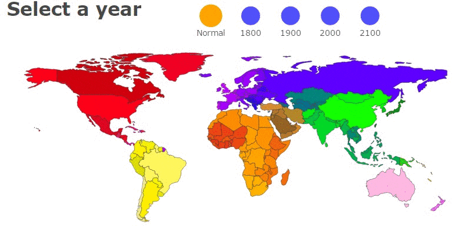

WORLD IN 2050
The future scares a lot of people. Climate change, a growing population, and fewer natural resources will certainly pose new challenges for the human race in the next few decades.
But when you consider ongoing social and economic progress and all of the coming innovations in science and technology, there's plenty of room for optimism.
We've pulled out some of our favorite ideas about the future of our world.

TOP 10 ECONOMIES IN 2050, ACCORDING TO PWC’S THE WORLD IN 2050 REPORT :
1. China
2. India
3. US
4. Indonesia
5. Brazil
6. Russia
7. Mexico
8. Japan
9. Germany
10. UK